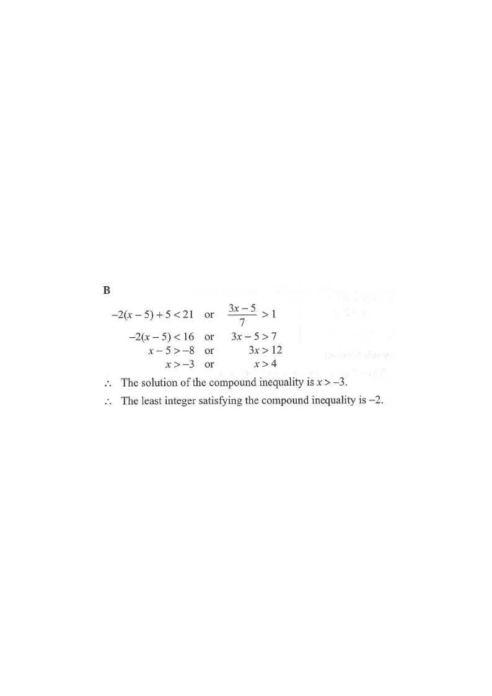

Compound inequality: $ -2(x-5)+5 \lt 21 $ OR $\dfrac{3x-5}{7} \gt 1$
Step 1: Read the given compound inequality (OR).
Topic 9: Inequalities & Linear Programming
The least integer satisfying the compound inequality
$-2(x-5)+5 \lt 21$ or $\dfrac{3x-5}{7} \gt 1$is
A. $-3$.
B. $-2$.
C. $4$.
D. $5$.

Identify the compound statement: it is an “OR” inequality.
$-2(x-5)+5 \lt 21$ or $\dfrac{3x-5}{7} \gt 1$
Hint: “OR” means the solution is the union of the two solution sets.
$-2(x-5)+5 \lt 21$
$-2(x-5) \lt 16$
$x-5 \gt -8$ (dividing by $-2$ flips the inequality)
$x \gt -3$
Remember: dividing or multiplying by a negative number reverses the inequality sign.
$\dfrac{3x-5}{7} \gt 1$
$3x-5 \gt 7$
$3x \gt 12$
$x \gt 4$
Multiplying both sides by the positive number $7$ keeps the sign unchanged.
Solution $= \{x \gt -3\} \cup \{x \gt 4\}$
Since $x \gt 4$ is already contained inside $x \gt -3$, the union simplifies to:
$\therefore \;\; x \gt -3$
Draw both sets on a number line — the wider set swallows the narrower one.
The integers satisfying $x \gt -3$ are: $-2,\,-1,\,0,\,1,\,2,\,\dots$
Note $x = -3$ does not work, because the inequality is strict ($\gt$).
Least integer $= -2$
Check: $-2 \gt -3$ ✓ $-3 \gt -3$ ✗
Question. Solve the compound inequality \(-3(x-2)+4<25\) or \(\dfrac{2x-7}{5}>1\), and hence find the least integer satisfying it.